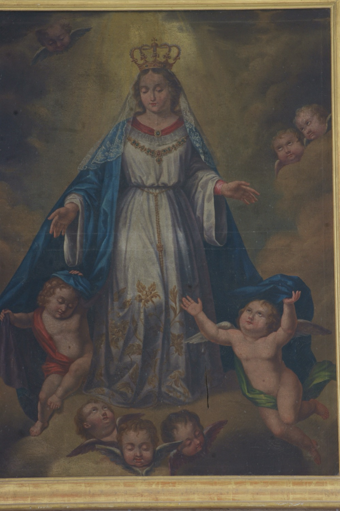

La Mare de Déu de l’Amor Hermós és una advocació de la Verge Maria que prové del llibre de l’Eclesiàstic (24:18), on la Saviesa divina diu: “Jo som la mare de l’amor hermós”. El seu culte està associat a la celebració del mes de maig com a mes de Maria i fou impulsat a Espanya per la Cort de Maria, un moviment religiós del segle XIX adreçat principalment a dones joves i fadrines. A Vilafranca es fundà una obreria vinculada a la Cort de Maria l’any 1853.
Aquesta pintura reprodueix el model oficial de la Mare de Déu de l’Amor Hermós difós a mitjan segle XIX per la Cort de Maria en forma d’estampes i litografies, basat en un gravat d’Antonio Pascual. La Verge hi apareix jove i serena, dreta en actitud elegant i majestuosa, seguint l’ideal femení de pietat i puresa promogut per la Cort de Maria. Vesteix com una Puríssima, amb túnica blanca i mantell blau, reforçant aquest ideal femení de devoció mariana. La corona representa el seu paper com a “Reina de tots els sants”, un dels títols que rep la Verge en aquesta advocació. El mantell obert i sostingut per dos angelets simbolitza la protecció que ofereix als seus devots.
Aquesta pintura presidí fins a mitjan segle XX l’actual altar del Sagrat Cor.